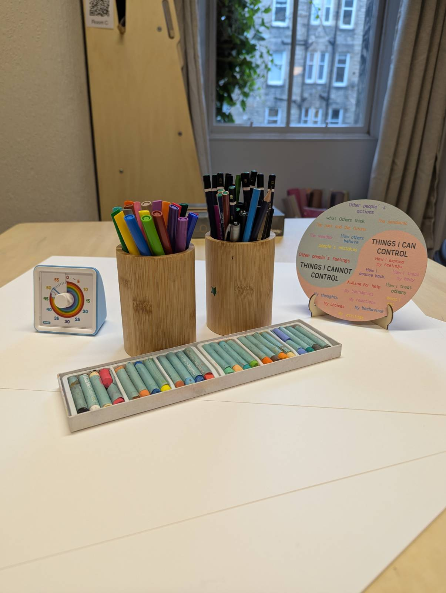
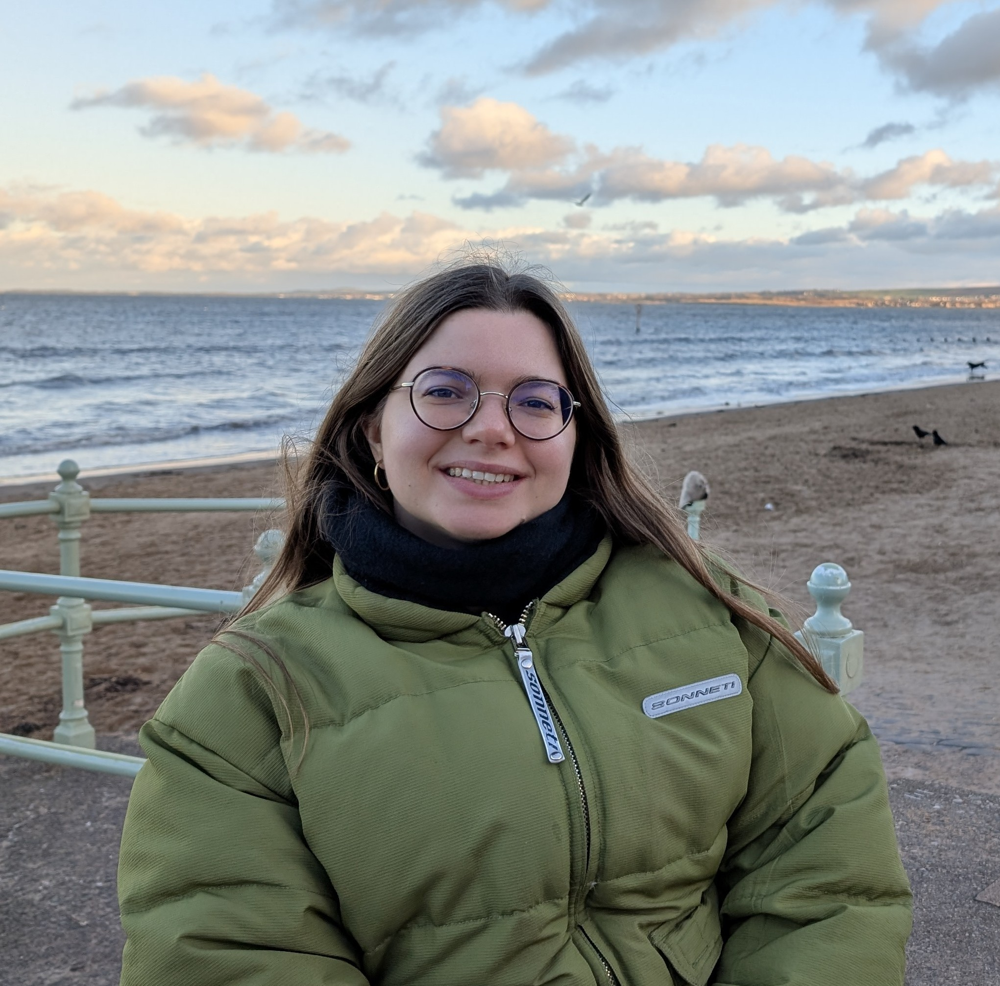
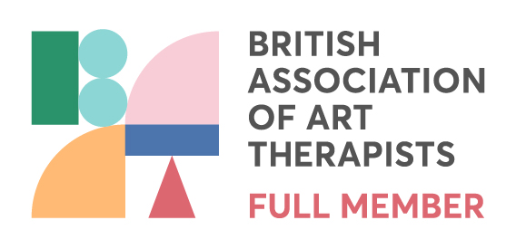
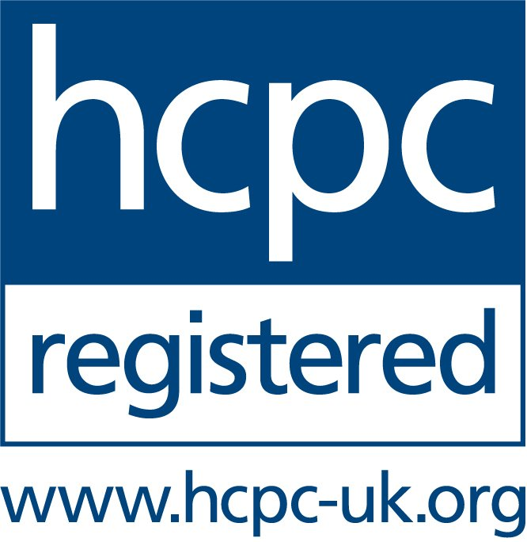
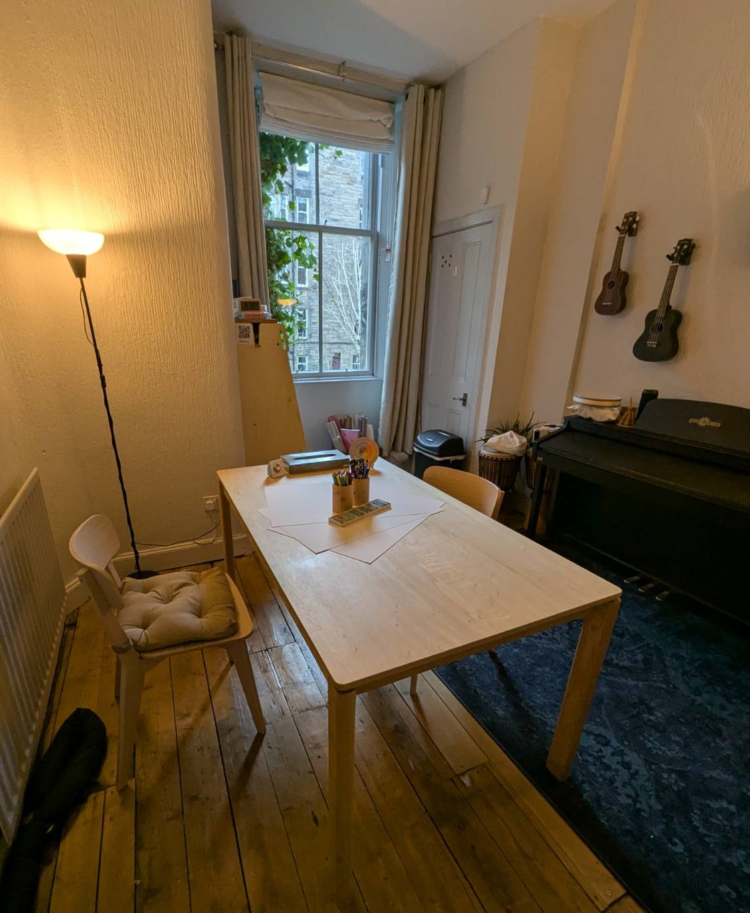

Art therapy is focused on the journey, not the destination. This process may help with:
This safe space allows you to relax and explore with a guiding and supporting set of hands.
No art experience necessary


“I focus on holistic techniques, which means you are the expert of your own lived experience, and you set the pace of your sessions.”


(Bus routes 1, 7, 35)
Please note that I don’t work on-site full-time, so all visits are by appointment only.

It is a form of psychotherapy that uses art-making as its primary mode of communication. It allows you to express thoughts and feelings that might be difficult to put into words, guided by a trained therapist.
Absolutely not. The focus is on the process and expression, not the final product. You don't need to be "good at art" to benefit from the sessions.
No, you can express yourself through art as much or as little as you wish.
A typical 50-minute session involves a check-in, a period of art-making (at your own pace), and a time to reflect together on the images or the process if you feel comfortable doing so.
Most people feel nervous at first, but sessions are relaxed and at your pace.
Nothing is shared outside of sessions unless there is a risk of harm. Showing of artwork is always the participant's choice. This is important for maintaining a trusting environment.
Anyone experiencing emotional distress, trauma, or life transitions. It is particularly effective for those who find traditional "talk therapy" intimidating or insufficient.
Be sure not to force anyone into therapy - it only works when the participant is ready. Instead, share information about its benefits and offer support if they express interest.
Yes, all professional-grade art materials—including paints, clay, collage, and drawing tools—are provided during our in-person sessions.